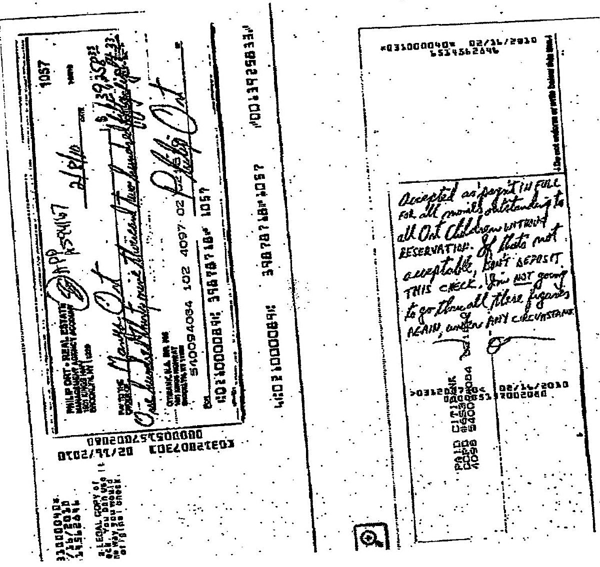

Financial overview
The $139,258 check
Check #1057 from the Philip Ort Real Estate Account to Manya Ort, dated February 16, 2010.
This check is presented as evidence against the claim that the Ort family was left with nothing.

What the document shows:
- Drawer: Philip Ort Real Estate Account, Brooklyn NY
- Check #1057, dated 2/16/10
- Payee: Manya Ort
- Amount: $139,258.00
- Handwritten note on the face: “Accepted as payment IN FULL for all monies outstanding to all Ort Children without RESERVATION. If that’s not acceptable, DON’T DEPOSIT THIS CHECK. I’m NOT going to go through all these figures AGAIN, under ANY CIRCUMSTANCE.”
What it does and doesn’t prove. The check documents a $139,258 payment from the real-estate account to Mrs. Ort in February 2010. The handwritten note frames it as a conditional full settlement of outstanding child-related monies — conditional because it instructs the recipient not to deposit it if the “in full” characterization is not accepted. Whether it settled the claims is a question for the underlying dispute; the scan alone records the offer and the condition.
Catalog entry: check-139258 (quality: usable — the scan is high-contrast and fax-like, but the key fields are readable).
See also the day-to-day support checks from the same era.